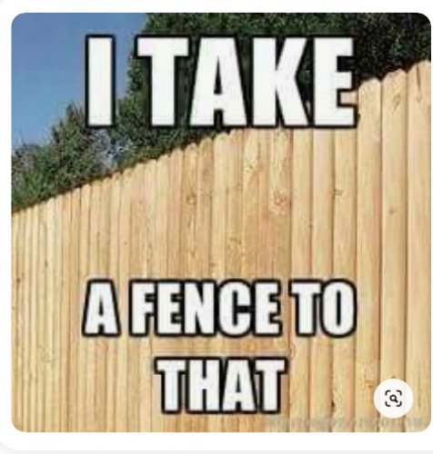

My acquaintance is offended. Do I not know that alcohol jokes are like rape jokes? Have I no sensitivity to all the misery alcohol has created, to people’s past and current struggles?
My acquaintance is offended. How does The Mind-Tickler dare joke about COVID, when they just had a family friend die? How can the Tickler make light of their terrible loss?
My acquaintance is offended. How dare I post about an oversize body in a too-small bathing suit? Do I not know the awful lifetime pain of being overweight? Do I not realize the potential hurt of my words is no better than bullying?
My acquaintance is offended. 30 years they have been on the spiritual path seeking enlightenment, and now I stroll casually, laughingly, right off that path into wild, rough grass. The wrongness - it’s infuriating. How dare ignorant me even look at this sacredness?
Ah the tender sensibilities of self. There’s no end to its ability to create outrage out of nothing.
I mean, sure, who doesn’t enjoy a good laugh? As long as it’s not about our situation.
But when it’s about the Me, the story of this particular life… well then, it’s not funny. It’s offensive.
Because it’s personal. PERSON-al.
And personal is infuriating.
Truly, nothing is more sacred than the self and its story and its past and its feelings and its likes.
And its pain.
We have no problem giggling at the non-pain. But our particular suffering? That requires hushed tones, whimpers, tears.
That requires reverence. Don’t even think of doing anything but worshipping at that alter.
Take my pain seriously! DO. NOT. MAKE. LIGHT. OF. MY. GOD.
Which is understandable, really. After all, we have all these years of defining the self by "memories" and the supposed past. “I am the one with the alcoholic dad, the one with the lifetime-laughed-at body, the one who never got enlightenment despite trying so hard.”
All these years polishing and preserving and honoring this version of This is who I am.
Such an investment. A devotion.
And then along comes someone with their own, different treasured pain, who is less than reverential about our carefully preserved narrative.
Well.
It feels like they’re laughing at the Me.
The actual Me, not just a story of me. The story feels like it’s literally what we are.
So of course it’s got to be protected.
Perhaps if other people willl just honor it, worship it with us, never take it lightly, never cross a line they don’t even know is there…
We can continue thinking our long-held tale of who we are and what happened to us and why it matters, is indeed what we are.
While meanwhile of course, those same folks are busy honoring and protecting their own chronicles of who they are too.
So no one ever notices that all of us, every single individual, is non-stop hiding that that chronicle is not what we are.
Because let’s face it. Nothing real is harmed by the letters F or A or T. Nothing real can prove a long-ago past still exists today, or even ever existed. (Oh lovely reader, notice if that one ticks you off, thereby proving the point.)
Nothing real depends on a collection of words and images, occurring to who-knows-what, to prove its existence.
Offense is an excellent diversion for not noticing the unreality of self, the unsolidity of story, the non-threat of non-existence.
Offense keeps the sense of self alive.
This is me and I'm offended.
This veil must not be breached. How dare we even notice it.
And yet, what might be left if it was possible to not identify with a fable? Without diversionary tactics?
I mean, it’s not possible. We can only ever be a sense, a story. We can only depend on narrative such as, "And then this happened," to know who or what we are.
Still, without all the usual clenched maintenance and protection of pain…
Wow, what a tale. What possibilities for lightness, amusement, inclusion of every happening, every whimsy.
So much more fun than the wary, pinched, careful outrage
we’ve been so devoted to honoring.
Who knows? We might even notice
how lighthearted this wispy comedy has been
even in every furious offense,
All along.
every week.
